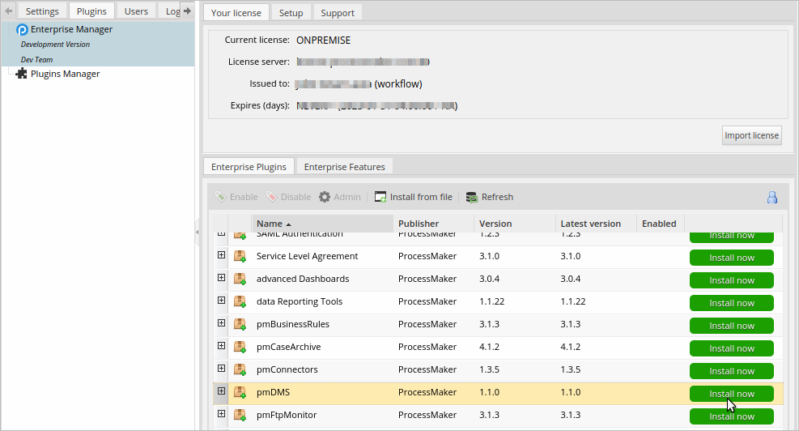
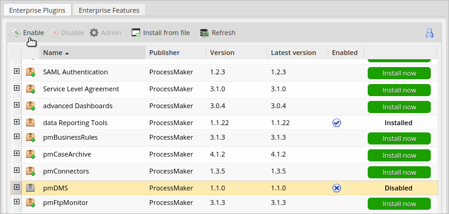
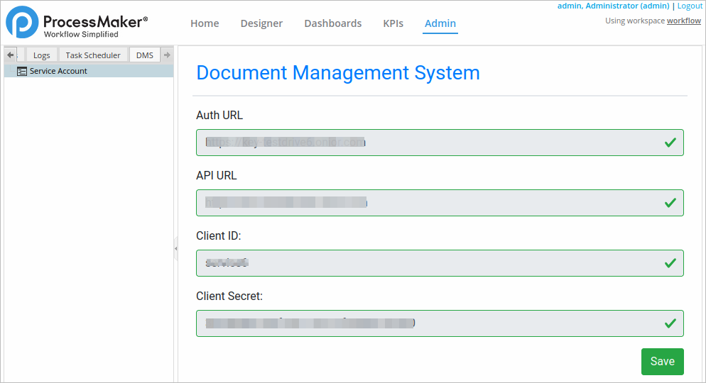
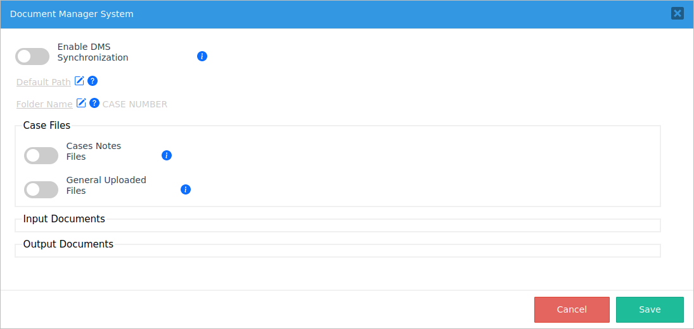
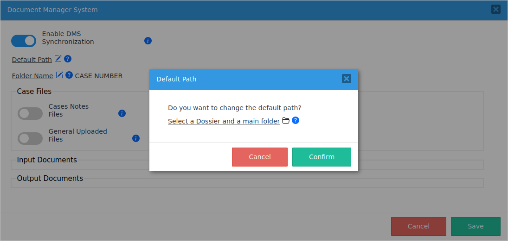
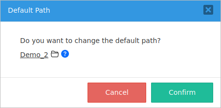
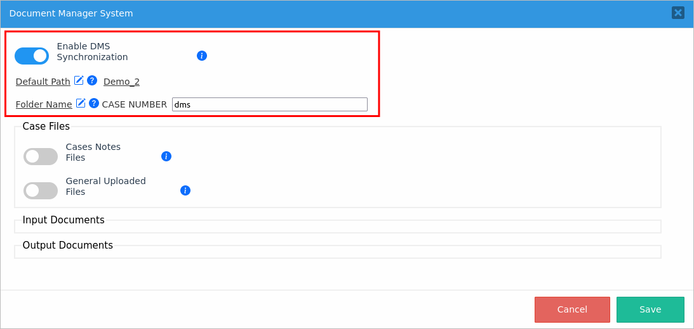
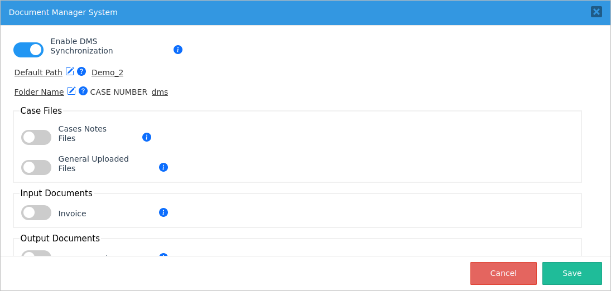

Plugin Version:
1.1.0
Plugin Version:
1.1.0
Overview
The Document Management System plugin integrates ProcessMaker workflow files with a Document Management System (DMS) solution. Integrate your DMS to ProcessMaker in an easy way and decide when to synchronize files.
The Document Management System plugin allows you decide which type of files upload to your process cases to a DMS solution.
Requirements
The requirements to install the Document Management System plugin are the following:
- ProcessMaker Enterprise, Corporate and Standard edition, version 3.8.2.
- Available workspace in the DMS service account where to locate the files. This is provided by your DMS provider.
- Available DMS client ID. This is provided by your DMS provider.
- Available DMS client secret. This is provided by your DMS provider.
Restrictions
Please take into consideration the following restrictions when using the plugin:
- The plugin does not define User and Group permissions.
- ProcessMaker IDP DMS service does not support Input Documents with versioning.
- ProcessMaker IDP DMS service does not upload files with the same name in a folder.
- ProcessMaker Classic (ProcessMaker 2 over 3) processes do not support ProcessMaker IDP DMS service.
Install and Enable the Document Management System Plugin
Follow these steps to complete the enterprise plugin installation:
Log on with a user, such as "admin", who has the PM_SETUP_ADVANCE permission in their role.
Go to ADMIN > Plugins > Enterprise Manager.
In the Enterprise Plugins tab, install the Document Management System plugin by doing one of the following:
- Click
 Install from File and upload the plugin file.
Install from File and upload the plugin file. - Click the Document Management System plugin's Install now or Upgrade now button in the list of available plugins.

For more information about plugin options, see Enterprise Manager Tool.
- Click
After installing the plugin, make sure that the Document Management System plugin is enabled
 . If the plugin is not enabled, click the Enable button, as shown in the graphic below.
. If the plugin is not enabled, click the Enable button, as shown in the graphic below.
Integrate a DMS Service Provider
After the Document Management System plugin is installed, integrate a DMS service provider to configure the files uploading in your processes.
Warning: If you already have a service account integrated and you want to update the workspace, only new case files are going to use the new workspace location. The plugin does not relocate the old files to the new workspace.
Follow these steps to integrate a DMS service provider:
Log on to ProcessMaker as an administrator, who has the PM_SETUP permission in their role.
In the top menu, go to the Admin. The Admin panel displays.
In the left menu, go to the DMS tab. The Document Management System panel displays.

In the Auth URL, enter the authentication URL where the DMS service is hosting. It is provided by your DMS provider. This setting is available as of Document Management System 1.1.0.
In the API URL, enter the API URL where the DMS service publishes their REST APIs. It is provided by your DMS provider. This setting is available as of Document Management System 1.1.0.
In the Client ID setting, enter the service client ID. It is provided by your DMS provider.
In the Client Secret setting, enter the service client secret. It is provided by your DMS provider.
Click Test Connection. If the information entered previously is available, the Save button displays. Otherwise, the Save button does not display and an error message displays.

Click Save to save settings. All processes in the designer now have the option ProcessMaker DMS option in the main toolbox.
Configure the DMS Synchronization in a Process
After a DMS service account is integrated, enable and configure the DMS synchronization in a process. Define a default path and the folder name in the DMS server for uploaded files of Case Notes, General Files, Input Documents, and Output Documents.
Warning: Take into account the following:
Follow these steps to configure the DMS synchronization:
Log on to ProcessMaker as an administrator or designer, who has the PM_FACTORY permission in their role.
In the top menu, go to the Designer. The Designer panel displays all process projects.
At the right side of the process panel in the Process Objects, click the option ProcessMaker DMS. The Document Manager System screen displays.

Click the Enable DMS Synchronization to sync files. The Default Path and Folder Name settings enable. If the Enable DMS Synchronization setting is disabled, all settings below are not removed, thereby stopping the file sync for the process.
Click Default Path. The Default Path screen displays to alert you if you want change it. After a path folder is configured and files have been uploaded to this folder, it is not recommended to change the default path to avoid file inconsistences allocated in diferent folders.

According to the DMS provider, select a Dossier if there is one. Otherwise, just select a main folder. For this purpose, click Select a Dossier and a main folder, available folders list.
Click a folder to select one or double click to open a folder. The selected folder displays.

Click Confirm to set the default path. Otherwise, click Cancel.
By default, a case uses the case number as a case folder name. Click Folder Name to set a case folder name after the case number prefix. An empty field displays next to the setting.
In the empty field, enter a custom name. The sync settings are done.

Click Save to save the sync settings. If the default path is valid, it allows you save the settings.
Map the Document Settings
After configuring the sync settings, map which documents are going to be synchronized. The file structures that are going to be uploaded to the DMS server are the following:
- Case Notes: Files and text uploaded to case notes.
- General Files: Any case file uploaded not related to an Input Document.
- Input Documents: List of all Input Documents, each one enabled independently. If enabling an Input Document, the synchronization sets sub folders in the master folder of the Input Document in the ProcessMaker DMS folder structure.
- Output Documents: List of all Output Documents, each one enabled independently. If enabling an Output Document, the synchronization sets sub folders in the master folder of the Output Document in the ProcessMaker DMS folder structure.
Warning: Take into account the following:
Follow these steps to structure the files sync:
Log on to ProcessMaker as an administrator or designer, who has the PM_FACTORY permission in their role.
In the top menu, go to the Designer. The Designer panel displays all process projects.
Edit the process that you previously configured sync settings.
At the right side of the process panel in the Process Objects, click the option ProcessMaker DMS. The Document Manager System screen displays with the configured sync settings.

Click the Case Notes Files toggle to sync case note files and the text to the DMS server.
Click the General Uploaded Files toggle to sync all case files not related to an Input Document to the DMS server.
The Input Documents section lists all process Input Documents. Select all Input Documents to sync to the DMS server by clicking their toggles. Note that the hint helps display the Input Document description: ensure to enter an adequate description.
The Output Documents section lists all process Output Documents. Select all Output Documents to sync to the DMS server by clicking their toggles. Note that the hint helps display the Output Document description: ensure to enter an adequate description.
Click Save to save the structure of the files sync.

The DMS server is going to sync files according to the structure defined in sync configuration as follows:
{Dossier Folder Name} {Case Folder Name} Input Documents {Input Document 1} {Input Document 2} ... Output Documents {Output Document 1} {Output Document 2} ... Case Notes General Uploaded Files does not have base folder
Error Handling and Event Logs
ProcessMaker Standard Logging records the following errors and events:
- When integrating a DMS Service Provider:
- Error when testing a previous valid setting.
- Change of service for audit measures.
- Successful service integrated and saved.
- All errors when configuring the DMS synchronization in a process.
- All errors when maping the document settings.